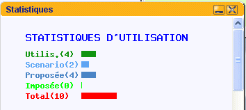
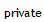
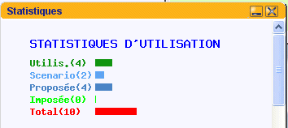

private ( privée )<-> public ( publique )


Mon LCS est un portail pédagogique permettant une appropriation individuelle de ressources et un partage de ressources au sein d'un établissement scolaire.
Mon LCS est basé sur la technologie Ajax versus ( prototype.js ) et effets DHTML adaptés pour créer un environnement le plus intuitif que possible (Environnement de bureau avec fenêtres de ressources, gestions des ressources, notes personnelles, flux RSS )
PRESENTATION
| Affiche en popup une courte description. Un double-clic permet à l'auteur de modifier la description. | |
| Efface la ressource en profondeur dans toutes les tables pour monlcs_is_admin. | |
|  | Un double clic change le
statut private ( privée )<-> public ( publique ) |
|
Comment la ressource
est-elle utilisée ?  |
| Les jumelles permettent de placer une fenêtre pour voir la ressource. | |
| Le crayon permet de renommer la ressource/ |
| Enregistrer le bureau (TOUS) | Cette commande sauvegarde l'état du bureau dans les bases de données de MonLCS. |
| Proposer par defaut (monlcs_is_admin) | Fixe les ressources qui apparaissent lorsque aucune ressource n'est enregistrée dans le menu en cours. |
| Ressources (TOUS) | Fait apparaître le pot de ressources. |
| Ajouter une note (Dans Bureau ou Scenari pour les professeurs et dans les onglets personnels) |
Permet l'ajout d'un note avec l'editeur FCKEditor configuré pour interagir avec le home de l'utilisateur. Cet editeur HTML permet d'incorporer des images, de créer des liens etc. |
| Figer des ressources (monlcs_is_admin) | Cette fonction force les ressources sur un menu. Elle est en contradiction avec la fonction proposer par défaut. Il est fortement conseillé de ne pas en abuser ! |
| Publier un scénario dans l'onglet Scenarii | Sauvegarde l'ecran en cours sous la forme d'un scénario pédagogique. |